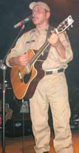

Tá, quem me conhece sabe que os ritmos das músicas não são meus preferidos, eu gosto é de rock’n’roll, mas as letras são ótimas e criativas, e como sou minoria no quesito “gosto musical” 99% das pessoas vão gostar e querer o CD deles para tocar no carro. E olha que o cara ainda é afinado hein!
Ah, você acha que é só isso? Pois está enganado, não é só música não, eles fizeram até vídeo clip! Sensacional o clip da música “Sendo Você”, com uma abertura eletrizante e cenas que mostram que o trabalho da Polícia Militar está longe de ser apenas prender bandidos. E o melhor, o vídeo “PM Boa de Bola”, uma visão bem humorada de vários destacamentos da PM jogando uma pelada.Tem também fotos do “making of” dos clipes, e da gravação do CD “Profissão Coragem” e fotos de shows (isso mesmo!), um deles com a banda Art Popular, que eu não conheço mas sei que é famosa porque já ouvi esse nome por aí.
Pensando melhor agora, eu acho que já tinha visto o clip PM Boa de Bola em algum lugar, e acho que pela quantidade de material em alguns estados o Stg Lago deve ser bem conhecido já. Mas como aqui pelo Rio não é, e o Brasil é muito grande, vale a pena divulgar no Caso de Polícia.
Olha uma das letras:
SOU PATRULHEIRO SGT Lago – CAP Rivaldo
Saio de casa como em todo dia Mas a rotina do serviço é diferente Na companhia assisto a preleção Aprendo a defender o cidadão Briga de marido e mulher OK, COPOM, estou indo ver o que é que é Tem cachorro latindo demais OK, COPOM, vou pedir pra ele parar
Sou patrulheiro Na rua o tempo inteiro Na VTR o tempo inteiro